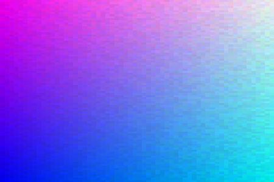

Example demonstrating a 3D Texture. The volume contains noise that is smoothed in the z-direction. Shown is one slice throught that volume to give the effect of “morphing” noise.
import numpy as np
from vispy.util.transforms import ortho
from vispy import gloo
from vispy import app
# Shape of image to be displayed
D, H, W = 30, 60, 90
# Modulated image
I = np.random.uniform(0, 0.1, (D, H, W, 3)).astype(np.float32)
# Depth slices are dark->light
I[...] += np.linspace(0, 0.9, D)[:, np.newaxis, np.newaxis, np.newaxis]
# Make vertical direction more green moving upward
I[..., 1] *= np.linspace(0, 1, H)[np.newaxis, :, np.newaxis]
# Make horizontal direction more red moving rightward
I[..., 0] *= np.linspace(0, 1, W)[np.newaxis, np.newaxis, :]
# A simple texture quad
data = np.zeros(4, dtype=[('a_position', np.float32, 2),
('a_texcoord', np.float32, 2)])
data['a_position'] = np.array([[0, 0], [W, 0], [0, H], [W, H]])
data['a_texcoord'] = np.array([[0, 0], [0, 1], [1, 0], [1, 1]])
VERT_SHADER = """
// Uniforms
uniform mat4 u_model;
uniform mat4 u_view;
uniform mat4 u_projection;
// Attributes
attribute vec2 a_position;
attribute vec2 a_texcoord;
// Varyings
varying vec2 v_texcoord;
// Main
void main (void)
{
v_texcoord = a_texcoord;
gl_Position = u_projection * u_view * u_model * vec4(a_position,0.0,1.0);
}
"""
FRAG_SHADER = """
uniform sampler3D u_texture;
uniform float i;
varying vec2 v_texcoord;
void main()
{
// step through gradient with i, note that slice (depth) comes last here!
gl_FragColor = texture3D(u_texture, vec3(v_texcoord, i));
gl_FragColor.a = 1.0;
}
"""
class Canvas(app.Canvas):
def __init__(self):
app.Canvas.__init__(self, keys='interactive')
self.size = W * 5, H * 5
self.program = gloo.Program(VERT_SHADER, FRAG_SHADER)
self.texture = gloo.Texture3D(I)
self.texture.interpolation = 'nearest'
self.texture.wrapping = 'clamp_to_edge'
self.program['u_texture'] = self.texture
self.program['i'] = 0.0
self.program.bind(gloo.VertexBuffer(data))
self.view = np.eye(4, dtype=np.float32)
self.model = np.eye(4, dtype=np.float32)
self.projection = np.eye(4, dtype=np.float32)
self.program['u_model'] = self.model
self.program['u_view'] = self.view
self.projection = ortho(0, W, 0, H, -1, 1)
self.program['u_projection'] = self.projection
self.i = 0
self._timer = app.Timer('auto', connect=self.on_timer, start=True)
def on_initialize(self, event):
gloo.set_clear_color('white')
def on_resize(self, event):
width, height = event.size
gloo.set_viewport(0, 0, width, height)
self.projection = ortho(0, width, 0, height, -100, 100)
self.program['u_projection'] = self.projection
# Compute the new size of the quad
r = width / float(height)
R = W / float(H)
if r < R:
w, h = width, width / R
x, y = 0, int((height - h) / 2)
else:
w, h = height * R, height
x, y = int((width - w) / 2), 0
data['a_position'] = np.array(
[[x, y], [x + w, y], [x, y + h], [x + w, y + h]])
self.program.bind(gloo.VertexBuffer(data))
def on_timer(self, event):
# cycle every 2 sec
self.i = (self.i + 1./120.) % 1.0
self.update()
def on_draw(self, event):
gloo.clear(color=True, depth=True)
self.program['i'] = 1.9 * np.abs(0.5 - self.i)
self.program.draw('triangle_strip')
if __name__ == '__main__':
c = Canvas()
c.show()
app.run()